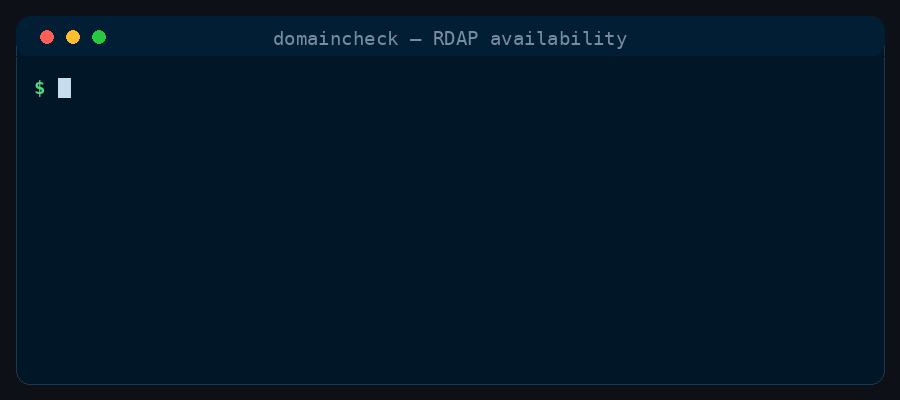

Tool
domaincheck
RDAP domain availability — registry-authoritative, not DNS guesswork.
Check domain name availability via RDAP — registry-authoritative verdicts (available, registered, unknown), batch TLD sweeps, optional registrar detail and whois passthrough. Reach for this when naming a product, verifying a handle's domain, checking a client's domain claim, or sweeping a shortlist across TLDs — RDAP 404 is the registry's own unregistered answer, not a DNS guess. Never a slash command; use it implicitly when the intent calls for one.
What it does
domaincheck queries https://rdap.org/domain/<name> and follows redirects to the authoritative registry. A registry 404 means available (unallocated); 200 means registered. Verdicts are available, registered, or unknown when the bootstrap path fails. It is stdlib-only (urllib) — no API keys — and batch mode staggers queries with backoff on HTTP 429.
It is a tool, not a command: you never type it. The crew reach for it when naming a product, sweeping a shortlist across TLDs, or verifying a domain claim — especially alongside social-card and pixelart in a launch-branding workflow. RDAP available does not mean cheap: premium and aftermarket names only surface at the registrar cart.
Examples
A few things domaincheck can produce, each from a small spec of its own. If you've set prefers-reduced-motion, any animation shows its final frame instead.

In practice
What it does to a real input:
$ python3 domaincheck.py github.com
$ python3 domaincheck.py --tld com,io shipmates-test-name-xyzzy
github.com registered
shipmates-test-name-xyzzy.com available
shipmates-test-name-xyzzy.io availableHow the crew reach for it
Tools are opt-in. Add it at install time with shipmates install --harness <name> --with-tools domaincheck, or pick it from the interactive list. Once installed the crew invokes it implicitly; there is no slash command.
Run python3 domaincheck.py github.com, pass several domains, or sweep TLDs with python3 domaincheck.py --tld com,app,io shipmates. Add --detail for registrar and date fields from RDAP JSON; --whois optionally prints human-readable whois output when the binary exists. Use --delay on large sweeps — public bootstrap rate-limits rapid queries.
Reference
- Name
domaincheck- Description
- Check domain name availability via RDAP — registry-authoritative verdicts (available, registered, unknown), batch TLD sweeps, optional registrar detail and whois passthrough. Reach for this when naming a product, verifying a handle's domain, checking a client's domain claim, or sweeping a shortlist across TLDs — RDAP 404 is the registry's own unregistered answer, not a DNS guess. Never a slash command; use it implicitly when the intent calls for one.
- Bundled files
domaincheck.py- Install
shipmates install --harness <name> --with-tools domaincheck
Where this lives
This page is generated from toolbox/domaincheck/tool.md. Opt in at install with --with-tools domaincheck and the installer copies the tool — instructions and bundled files — into the harness's skills tree.